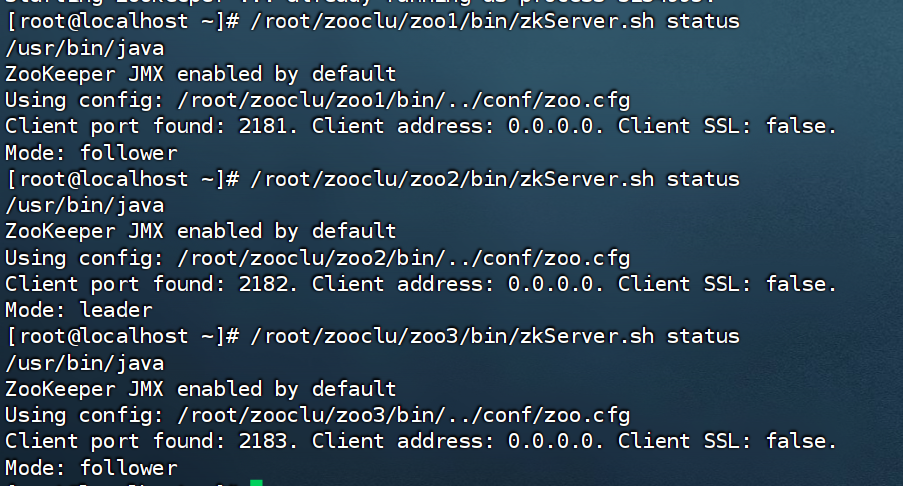

ZooKeeper 是一个分布式的、开放源码的分布式应用程序协同服务，其设计目标是将那些复杂且容易出错的分布式一致性服务封装起来，构成一个高效可靠的原语集，并以一系列简单易用的接口提供给用户使用。
其核心思想是 **用一棵统一的层次化 znode 数据树（data tree）把分布式一致性问题封装成简单可靠的原语**，让开发者通过类文件系统的接口即可实现锁、选主、配置管理等协同机制，而无需自己处理底层的协调细节。
ZooKeeper 3.8.4 · Curator 5.1.0
1. 概述
1.1 简介
ZooKeeper 是一个分布式的、开放源码的分布式应用程序协同服务。ZooKeeper 的设计目标是将那些复杂且容易出错的分布式一致性服务封装起来，构成一个高效可靠的原语集，并以一系列简单易用的接口提供给用户使用。
1.2 数据模型
ZooKeeper 的数据模型是层次模型。层次模型常见于文件系统。层次模型和 key-value 模型是两种主流的数据模型。ZooKeeper 使用文件系统模型主要基于以下两点考虑：
- 文件系统的树形结构便于表达数据之间的层次关系。
- 文件系统的树形结构便于为不同的应用分配独立的命名空间（namespace）。
ZooKeeper 的层次模型称作 data tree。Data tree 的每个节点叫做 znode。不同于文件系统，每个节点都可以保存数据。每个节点都有一个版本（version），版本从 0 开始计数。
如上图所示的 data tree 中有两个子树，一个用于应用 1（/app1）和另一个用于应用 2（/app2）。
应用 1 的子树实现了一个简单的组成员协议：每个客户端进程 pi 创建一个 znode p_i 在 /app1 下，只要 /app1/p_i 存在就代表进程 pi 在正常运行。
1.3 data tree 接口
ZooKeeper 对外提供一个用来访问 data tree 的简化文件系统 API：
- 使用 UNIX 风格的路径名来定位 znode，例如 /A/X 表示 znode A 的子节点 X。
- znode 的数据只支持全量写入和读取，没有像通用文件系统那样支持部分写入和读取。
- data tree 的所有 API 都是 wait-free 的，正在执行中的 API 调用不会影响其他 API 的完成。
- data tree 的 API 都是对文件系统的 wait-free 操作，不直接提供锁这样的分布式协同机制。但是 data tree 的 API 非常强大，可以用来实现多种分布式协同机制。
1.4 znode 分类
一个 znode 可以是持久性的，也可以是临时性的，znode 节点也可以是顺序性的。每一个顺序性的 znode 关联一个唯一的单调递增整数，因此 ZooKeeper 主要有以下 4 种 znode：
| 类型 | 说明 |
|---|---|
| 持久性的 znode（PERSISTENT） | ZooKeeper 宕机，或者 client 宕机，这个 znode 一旦创建就不会丢失。 |
| 临时性的 znode（EPHEMERAL） | ZooKeeper 宕机了，或者 client 在指定的 timeout 时间内没有连接 server，都会被认为丢失。 |
| 持久顺序性的 znode（PERSISTENT_SEQUENTIAL） | 除具备持久性 znode 的特点外，znode 的名字具备顺序性。 |
| 临时顺序性的 znode（EPHEMERAL_SEQUENTIAL） | 除具备临时性 znode 的特点外，znode 的名字具备顺序性。 |
2. 安装与配置 ZooKeeper
下载地址：https://archive.apache.org/dist/zookeeper/stable/
2.1 下载与解压
> tar -zxvf apache-zookeeper-3.8.4-bin.tar.gz
>
> mv apache-zookeeper-3.8.4-bin zookeeper
>
> rm apache-zookeeper-3.8.4-bin2.2 配置文件 zoo.cfg
把 conf 目录下的 zoo_sample.cfg 重命名为 zoo.cfg，然后修改配置。
# 心跳检查的时间 2秒
tickTime=2000
# 初始化时 连接到服务器端的间隔次数，总时间10*2=20秒
initLimit=10
# ZK Leader 和follower 之间通讯的次数，总时间5*2=10秒
syncLimit=5
# 存储内存中数据快照的位置，如果不设置参数，更新事务日志将被存储到默认位置。
dataDir=/data/zookeeper
# ZK 服务器端的监听端口
clientPort=21812.3 环境变量与启动
配置以下环境变量 vim /etc/profile ：
export ZOOKEEPER_HOME=/root/zookeeper
export PATH=$PATH:$ZOOKEEPER_HOME/bin:$ZOOKEEPER_HOME/conf> `source /etc/profile`运行 zookeeper
[root@localhost bin]# zkServer.sh start
/usr/bin/java
ZooKeeper JMX enabled by default
Using config: /root/zookeeper/bin/../conf/zoo.cfg
Starting zookeeper ... already running as process 1024705.检查 ZooKeeper 日志是否有出错信息：
[root@localhost zookeeper]# cd logs/
[root@localhost logs]# grep -E -i "((exception)|(error))" *2.4 客户端命令
> zkCli.sh -server localhost:2181命令基本语法如下：
| 命令 | 说明 |
|---|---|
| help | 显示所有操作命令 |
| ls path | 使用 ls 命令查看当前 znode 中所包含的内容 |
| ls2 path | 查看当前节点数据并能看到更新次数等数据 |
| create | 普通创建；-s 含有序列，-e 临时节点（重启或者超时消失） |
| get path | 获取节点的值 |
| set | 设置节点的值 |
| stat | 查看节点状态 |
| delete | 删除节点 |
| rmr | 递归删除节点 |
| deleteall path | 删除所有节点 |
3. Curator 客户端
3.1 引入依赖
<dependency>
<groupId>org.apache.curator</groupId>
<artifactId>curator-framework</artifactId>
<version>5.1.0</version>
</dependency>
<dependency>
<groupId>org.apache.curator</groupId>
<artifactId>curator-recipes</artifactId>
<version>5.1.0</version>
</dependency>3.2 创建连接
//失败一次休眠3秒，最多重试3次
ExponentialBackoffRetry retry = new ExponentialBackoffRetry(3000, 10);
CuratorFramework client =
CuratorFrameworkFactory.newClient("192.168.3.133:2181", 60 * 1000, 15 * 1000, retry);
//开启服务端
client.start();CuratorFramework nClient = CuratorFrameworkFactory.builder()
.sessionTimeoutMs(60 * 1000)
.connectionTimeoutMs(15 * 1000)
.connectString("192.168.3.133:2181")
.retryPolicy(retry).build();
nClient.start();3.3 创建节点
withMode 创建节点的模式，forPath 创建节点的 path。
String path = client.create().withMode(CreateMode.CONTAINER).forPath("/app1");
byte[] bytes = client.getData().forPath("/app1"); //获取数据3.4 修改数据
使用版本号可以防止多个进程修改 data 而产生错误。
Stat status = new Stat();
client.getData().storingStatIn(status).forPath("/app1");
int version = status.getAversion();
client.setData().withVersion(version).forPath("/app1","test".getBytes());3.5 删除节点
//删除单个节点
client.delete().forPath("/app1");
//删除节点及以下所有子节点
client.delete().deletingChildrenIfNeeded().forPath("/app1");
//必须删除成功
client.delete().guaranteed().forPath("/app1");
//回调
client.delete().guaranteed().inBackground((client,event)->{
System.out.println("event = " + event);
}).forPath("/app1");4. Watcher 事件处理器
一个 Watcher 监听器在向服务端完成注册后，当服务端的一些事件触发了这个 Watcher，那么就会向指定客户端发送一个事件通知，来实现分布式的通知功能。客户收到服务器的通知后，Curator 会封装一个 WatchedEvent 事件实例，传递给监听器的回调方法 process（WatchedEvent event）。
4.1 WatchedEvent 属性
WatchedEvent 包含了三个基本属性：
- 通知状态（keeperState）
- 事件类型（EventType）
- 节点路径（path）
注意，WatchedEvent 并不是直接从 ZooKeeper 集群直接传递过来的事件实例，而是 Curator 封装过的事件实例。WatchedEvent 类型没有实现序列化接口 java.io.Serializable，因此不能用于网络传输。ZooKeeper 集群直接网络传输传递过来的事件实例是一个 WatcherEvent 类型的实例，这个传输实例和 Curator 封装过的 WatchedEvent 实例，在名称上有一个字母之差，而且功能也是一样的，都表示的是同一个事物，都是对一个服务端事件的封装。
4.2 监听示例
感知自身节点变化：
final NodeCache nodeCache = new NodeCache(client,"/app");
nodeCache.getListenable().addListener(()->{
byte[] data = nodeCache.getCurrentData().getData();
System.out.println(new String(data));
});
nodeCache.start();感知子节点变化：
PathChildrenCache pathChildrenCache = new PathChildrenCache(client,"/app",true);
pathChildrenCache.getListenable().addListener((client,event)->{
PathChildrenCacheEvent.Type type = event.getType();
if (type.equals(PathChildrenCacheEvent.Type.CHILD_UPDATED)){
byte[] data = event.getData().getData();
System.out.println(new String(data));
}
});
pathChildrenCache.start();感知子节点与自身节点变化：
TreeCache treeCache = new TreeCache(client,"/app");
treeCache.getListenable().addListener((client,event)->{
byte[] data = event.getData().getData();
System.out.println(new String(data));
});
treeCache.start();5. 分布式锁实现
- 利用 ZooKeeper 可以创建临时带序号节点的特性来实现一个分布式锁。
- 多个系统的多个线程都要在此目录下创建临时的顺序节点，因为 Zk 会为我们保证节点的顺序性，所以可以利用节点的顺序性来对不同线程的先来后到进行判断。此时，在分布式下应该添加锁的线程就是 zk 指定目录下序号最小的临时序列节点所代表的线程。
- 当每个线程请求对应资源时，都需要先在 zk 指定目录下创建临时顺序节点，然后获取当前目录下最小的节点序号（加锁的线程），判断最小节点是不是当前节点（判断是不是自己），如果是那么获取锁成功，如果不是那么获取锁失败。
- 获取锁失败的线程获取当前节点上一个临时顺序节点，并对对此节点进行监听。当该节点删除的时候（上一个线程执行结束删除或者是掉线 zk 删除临时节点）这个线程会获取到通知，代表获取到了锁。
public class Ticket implements Runnable{
private Integer number = 10;
private InterProcessMutex lock;
public Ticket(){
ExponentialBackoffRetry retry = new ExponentialBackoffRetry(3000, 10);
CuratorFramework client = CuratorFrameworkFactory.builder()
.sessionTimeoutMs(60 * 1000)
.connectionTimeoutMs(15 * 1000)
.connectString("192.168.3.133:2181")
.retryPolicy(retry).build();
client.start();
lock = new InterProcessMutex(client,"/lock");
}
@Override
public void run() {
while (true){
//加锁
try {
lock.acquire(3, TimeUnit.SECONDS);
if (number > 0){
System.out.println("number = " + number);
number--;
}
} catch (Exception e) {
throw new RuntimeException(e);
}finally {
//释放锁
try {
lock.release();
} catch (Exception e) {
throw new RuntimeException(e);
}
}
}
}
}6. 集群搭建
6.1 角色说明
ZooKeeper 集群模式一共有三种类型的角色：
| 角色 | 说明 |
|---|---|
| Leader | 处理所有的事务请求（写请求），可以处理读请求，集群中只能有一个 Leader。 |
| Follower | 只能处理读请求，同时作为 Leader 的候选节点；如果 Leader 宕机，Follower 节点要参与到新的 Leader 选举中，有可能成为新的 Leader 节点。 |
| Observer | 只能处理读请求，不能参与选举。 |
6.2 部署步骤
安装 jdk、zookeeper，并准备三个节点目录：
> mkdir zooclu
>
> cp -r zookeeper zooclu/zoo1
>
> cp -r zoo1/ ./zoo2/
>
> cp -r zoo1/ ./zoo3/更改 dataDir 目录和 ClientPort，并写入 myid：
> /root/zooclu/zoo1/logs
>
> /root/zooclu/zoo2/logs
>
> /root/zooclu/zoo2/logs
>
> CLientPort 2181 2182 2183
>
> echo 1 > /root/zooclu/zoo1/logs/myid
>
> echo 2 > /root/zooclu/zoo2/logs/myid
>
> echo 3 > /root/zooclu/zoo3/logs/myid
>
> 服务间通信端口 服务器投票选举接口
>
> server.1 = 192.168.3.133:2881:3881
>
> server.2 = 192.168.3.133:2882:3882
>
> server.3 = 192.168.3.133:2883:3883启动并查看状态：
> /root/zooclu/zoo1/bin/zkServer.sh start
>
> /root/zooclu/zoo2/bin/zkServer.sh start
>
> /root/zooclu/zoo3/bin/zkServer.sh start
>
> 查看状态
>
> /root/zooclu/zoo1/bin/zkServer.sh status
>
> /root/zooclu/zoo2/bin/zkServer.sh status
>
> /root/zooclu/zoo3/bin/zkServer.sh status
一句话总结：ZooKeeper 通过统一的层次化 znode 数据树与临时/顺序节点等原语，为分布式系统提供简单可靠的协调服务，可据此实现配置管理、Watcher 监听、分布式锁与高可用集群。